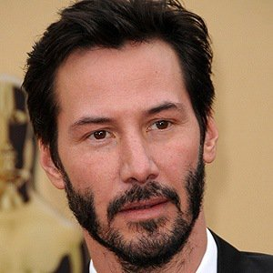
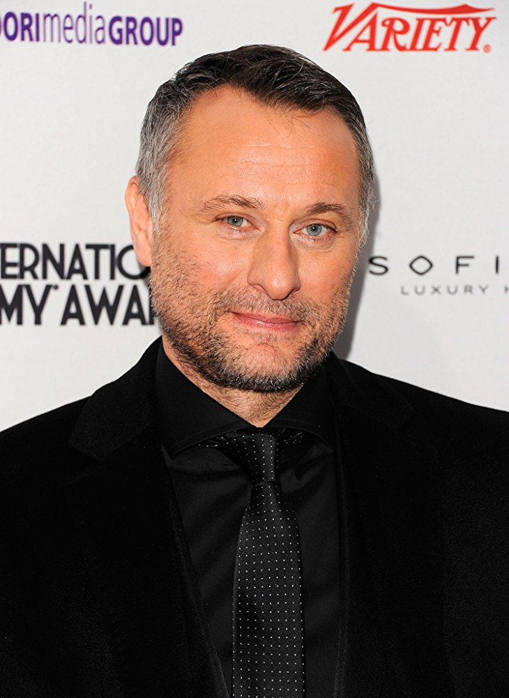
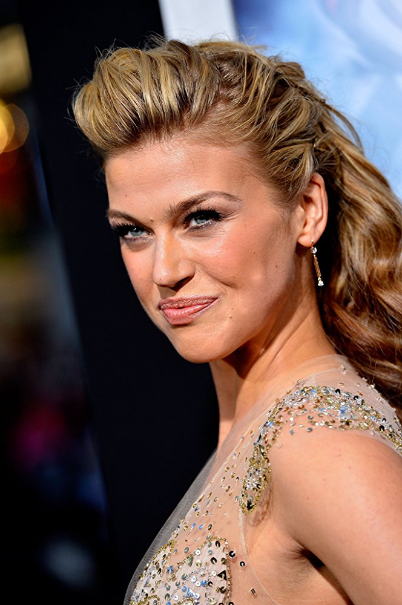
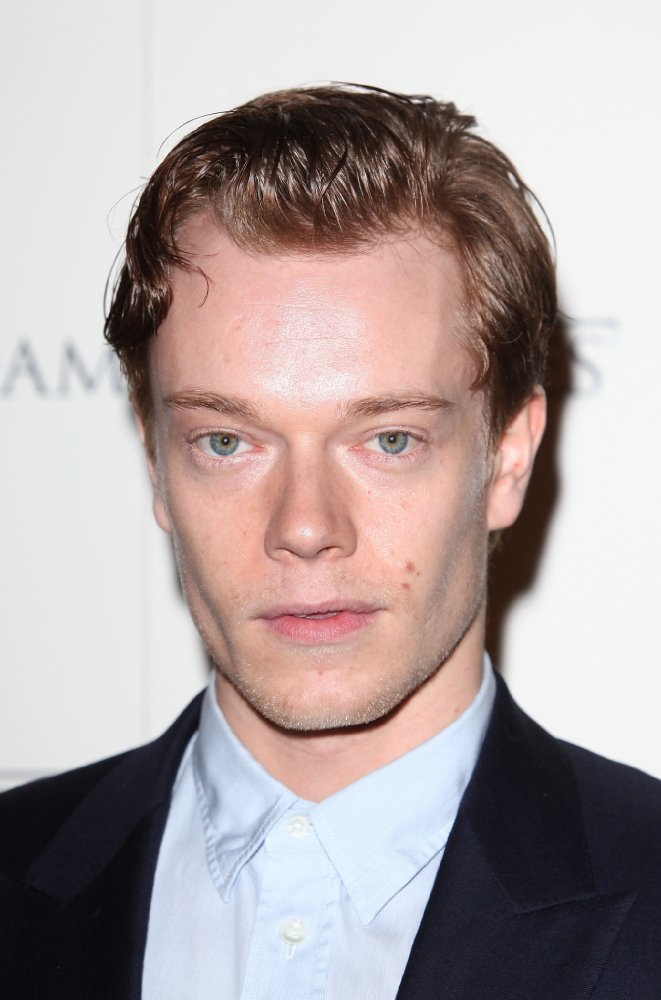

Filming
The film was shot digitally with Arri Alexa XT in a distributed aspect ratio of 2.39:1. Cinematographer Jonathan Sela himself chose to work with Arri Alexa XT cameras due to discussions regarding the look of the film John Wick, thus he pushed for a mix of ARRICAM and ALEXA which allowed, in turn, the blend of film and digital. "Everybody loved the idea but when you run the numbers of having two packages and also the cost of film, it gets too expensive, so we decided to work entirely with the ALEXA. It's the camera I've used on commercials so I knew I was comfortable with the ALEXA and I knew I liked it." Sela spoke of the idea that Stahelski, Leitch and himself wished to achieve a visual contrast between John Wick's normal life and the other of which he's drawn back into the underworld of assassins. "We wanted the first look to be soft and clean, and the second to be grittier, darker and sharper
Influences
Director Chad Stahelski said influences on John Wick included The Good, the Bad and the Ugly (1966), Point Blank (1967), Le Cercle Rouge (1970), and The Killer (1989).
Stahelski said about The Good, the Bad and the Ugly, "Look at Clint Eastwood in – there is so much back-story unsaid there. We're big fans of leaving it to your imagination. We just give you some gold coins, and then it's, "Where do the gold coins come from?" We'll get to that. Have your imagination do some work there." He also said Point Blank (1967) influenced John Wick: "One of the biggest inspirations for the film was Point Blank. We watched it on a loop in our office and there are a couple homages to that [in John Wick]." Park Chan-wook's The Vengeance Trilogy (2002–2005) and Lee Jeong-beom's The Man from Nowhere (2010) influenced the film due to "minimalist composition and graphic nature." For screenwriter Derek Kolstad, both Alistair MacLean and Stephen King were huge influences in the creation of the story of John Wick in terms of characterisation and world-building, stating, with himself stating, "MacLean could build a world, and King could surprise you by what the main character truly was capable of."
Visual effects
TJake Braver was the overall Visual Effects Supervisor and visual effects company Spin VFX worked on most of the visual effects on John Wick.The musical score to John Wick was composed by Tyler Bates and Joel J. Richard, with on-screen violin music performed by Scott Tixier. The film also features a few pieces of additional music such as Marilyn Manson's "Killing Strangers" and T-Bo and Bengie B's "Get Money". The original soundtrack album, John Wick: Original Motion Picture Soundtrack, was released digitally on October 21 and received a physical format release on October 27 by Varese Sarabande Records. In addition to Bates and Richard's score, the album features music by artists such as Ciscandra Nostalghia, The Candy Shop Boys, and M86 & Susie Q. Le Castle Vania also provided additional music for the score.
Storyline
An ex-hitman comes out of retirement to track down the gangsters that took everything from him. With New York City as his bullet-riddled playground, JOHN WICK (Keanu Reeves) is a fresh and stylized take on the "assassin genre". (C) Lionsgate
Cast
-

Keanu Reeves
-

Michael Nyqvist
-

Adrianne Palicki
-

Alfie Allen
Box Office
John Wick earned $14.4 million from 2,589 locations on its opening weekend, compared to the $7–8 million opening most analysts projected the film would make. By the end of its theatrical run, John Wick grossed $45.7 million in North America and $43 million in other territories for a worldwide total of $88.8 million, against a production budget of $20 million.
The film had a wide release in the United States and Canada in selected theatres on October 24. The film earned $5.45 million on its opening day, including $875,000 from Thursday night previews, which was the second highest opening of that weekend, at an average of $5,465 per theater. The film grossed $2.5 million from 347 IMAX locations that weekend, which represented 17.7 percent of the film's overall gross for its opening weekend. The audience was 60% male and 77% were older than 25.
Outside North America, the film took $1.4 million during its international opening weekend. The film's highest-grossing debuts were in France, Australia, Thailand, Mexico, and the United Arab Emirates. On its second week, it added $6.7 million from 33 territories. The film went number one in France ($1.2 million) from 300 screens, number three in Australia ($961,000) from 177 screens, and number ten in the Middle East ($1 million) from a total of 80 screens.
Critical Response
John Wick received generally positive reviews. On review aggregator website Rotten Tomatoes the film has an approval rating of 86% based on 194 reviews, with an average rating of 6.9/10. The site's critical consensus reads, "Stylish, thrilling, and giddily kinetic, John Wick serves as a satisfying return to action for Keanu Reeves – and what looks like it could be the first of a franchise." Metacritic, another review aggregator, assigned the film a weighted average score of 68 out of 100, based on 39 critics, indicating "generally favorable reviews". CinemaScore reported that audiences gave the film a "B" grade, on an A+ to F scale.